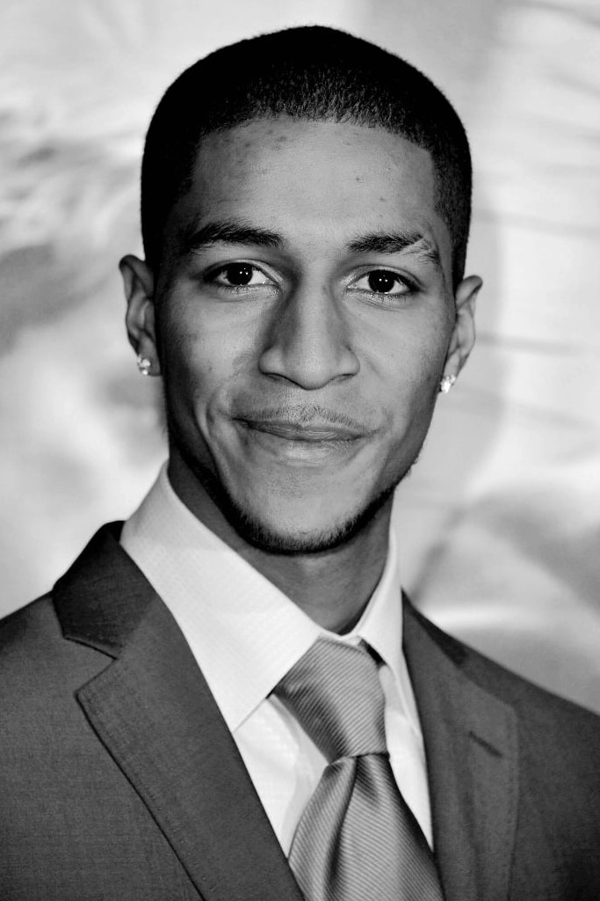
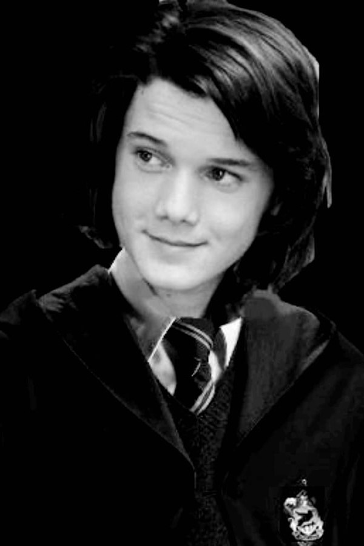
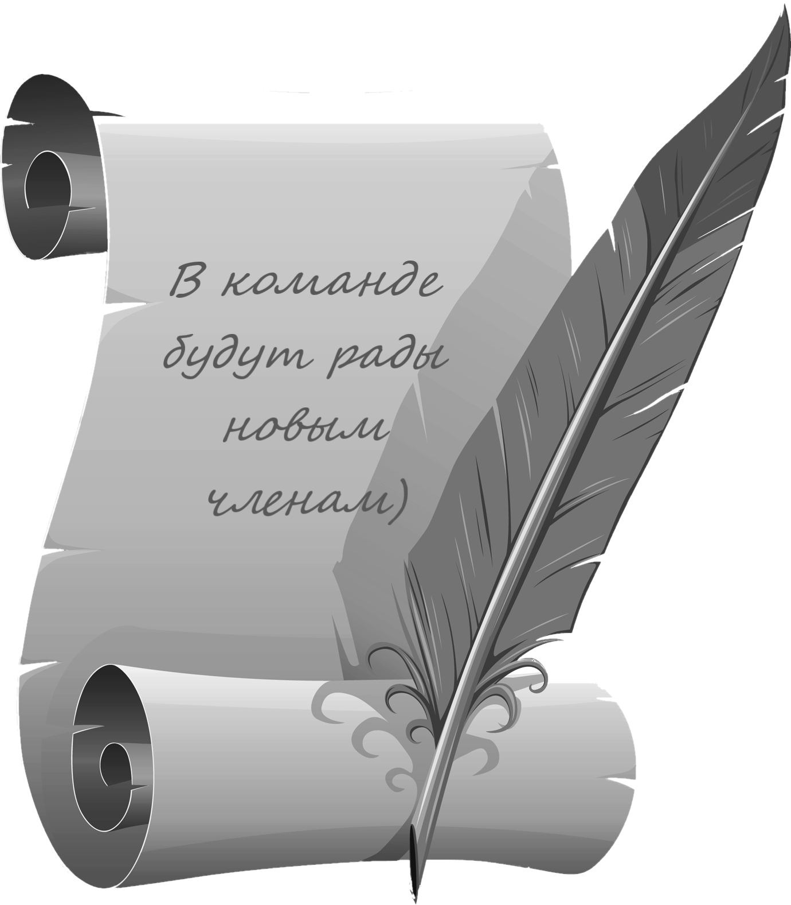
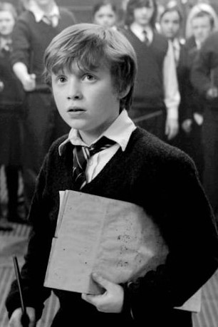
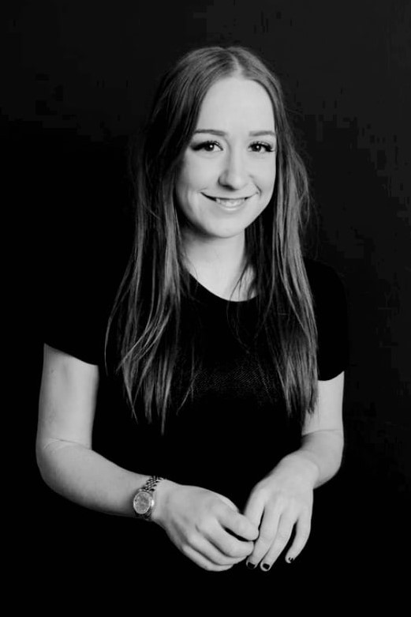

| Главная Новости Галерея Контакты |
|---|
|
Мы рады приветствовать вас на официальном сайте газеты "Хогвартские вести". Теперь ознакомиться с нашим материалом можно не только в оригинальном печатном формате, но и в электронном. Также здесь вы можете узнать, кто принимает непосредственное участие в создании газеты. К вашему вниманию: Колин КривиГлавный редактор, фотограф и непосредственно учредитель газеты. Мальчик, который с первого курса хвостиком ходил за Гарри Поттером и фотографировал всё подряд со скоростью пулемётной очереди нашедший себя в издательстве. Блейз ЗабиниТалантливый корреспондент, дизайнер, заместитель главного редактора и Слизеринец, умеющий распологать к себе людей. Быстро находит информацию о произошедшем и преподносит её в правдивом виде (Не то что Рита Скитер). Терри БутОтветственный за отдел аналитической журналистики. Отвечает за качество публекаций, а также как и подобает Когтевранцу найдёт, проанализирует и преподнесёт любую информацию понятным языком.  Деннис КривиФотограф. Пошёл по стопам старшего брата, также открыв в себе талантливого фотографа, который умудряется фотографировать в нужное время и в нужнем месте. Сьюзен БоунсРедактор, дизайнер и ответственный за отдел маркетинга и рекламы. Если кто-то захочет разместить свою рекламу в газете так, чтобы её заметили, обязательно обращайтесь именно к ней. Всё будет сделано на высшем уровне. |